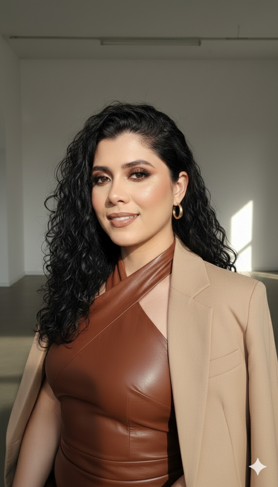

🎓 EO Consultoria Acadêmica:
Orientação e apoio na escrita de trabalhos acadêmicos, com rigor metodológico, ética e compromisso com a qualidade científica.
🎓 EO Consultoria Acadêmica:
Orientação e apoio na escrita de trabalhos acadêmicos, com rigor metodológico, ética e compromisso com a qualidade científica.
👩🏫 Sobre a consultoria:

Fundadora: Elayne Oliveira
🎓 Formação Acadêmica:
• Licenciada em Ciências Naturais – Biologia (UFMA)
• Especialista em Informática na Educação (IFMA)
📚 Experiência Profissional:
• Educadora inclusiva na Educação Infantil
• Docente no Ensino Fundamental Anos Iniciais (1º ao 5º ano) e Anos Finais (6º ao 9º ano).
• Docente em cursos técnicos profissionalizantes
• Experiência na orientação de trabalhos acadêmicos e no acompanhamento de projetos educacionais voltados a estudantes, professores e pesquisadores
Avaliação de alguns estudantes e professores que já passaram pela consultoria acadêmica. 💖🎓


📩 Contato
Para mais informações sobre orientações acadêmicas, entre em contato:
📱 Converse com Profa. Esp. Elayne Oliveira no WhatsApp.
✉️ E-mail
📷 Instagram